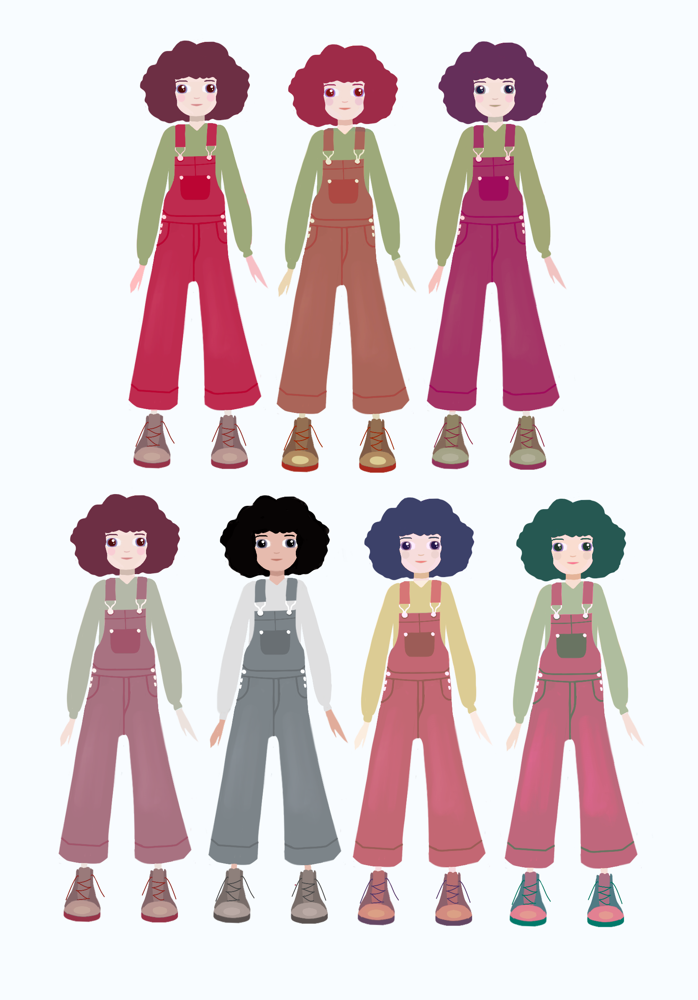
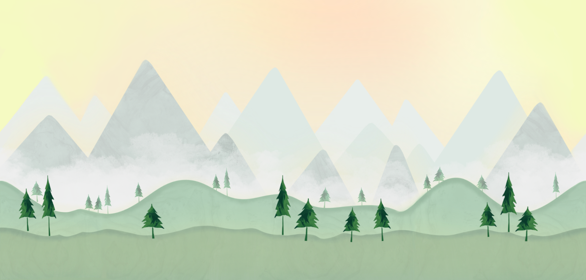
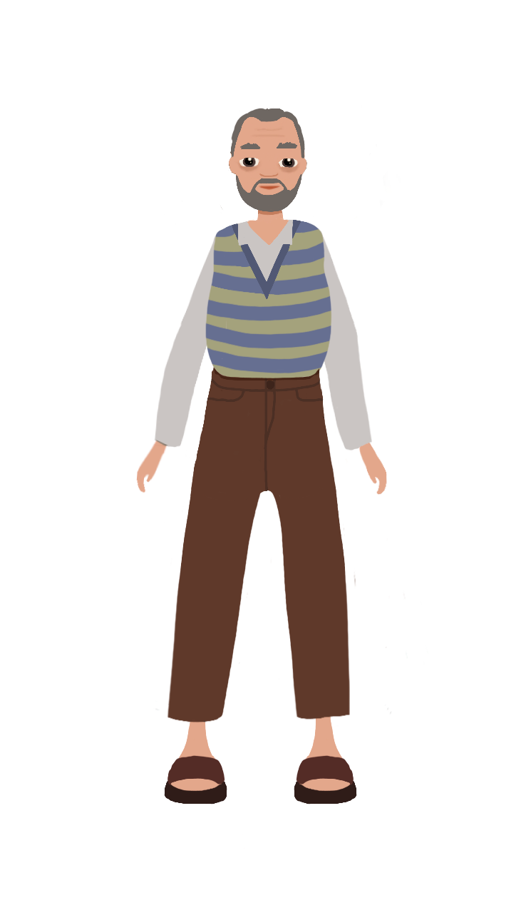
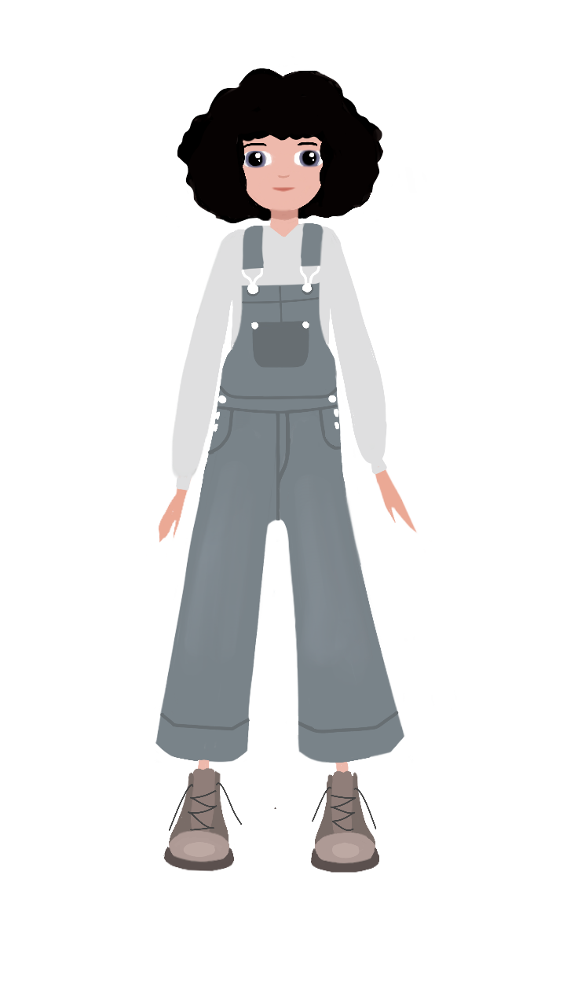
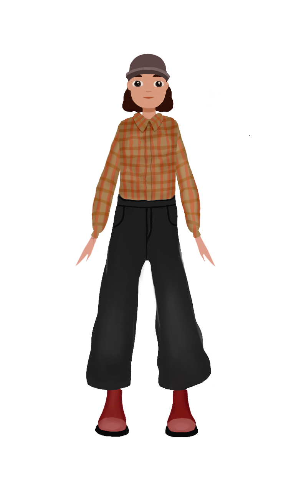

Slipped Away is a single-player puzzle game that seamlessly blends logic-driven gameplay with a heartfelt narrative.
Set across two mirrored realms — the world of the living and the world of the dead — the game challenges players to solve puzzles by shifting between dimensions, using the interplay between both worlds to progress.
At its core, it is a story of love and loss, following a young girl’s - Amara's - journey to reconnect with her departed grandmother.
With a striking hand-drawn art style, dynamic soundscapes, and a thoughtful balance between challenge and emotion, Slipped Away invites players into an immersive experience where every puzzle solved feels like a step closer to something profoundly human.
Amara's world was once simple and serene, living each day in the loving embrace of her grandmother, surrounded by the quaint charm of Cedarwood.
But the turns of fate can shatter even the most peaceful of lives, and when her grandmother suddenly slipped away, Amara is left reeling in a world turned upside down.
She must journey through death and life to search for her lost grandmother.
Game Concept

Slipped Away is a captivating blend of puzzle-solving and parallel worlds, offering a unique twist: mirrored puzzles that span the realms of the living and the dead.
Players must navigate both sides of this reflection, shifting seamlessly between worlds to solve intricate puzzles.
The challenge lies in uncovering the differences between the two worlds and understanding how altering one realm influences the other.
While the puzzles form the heart of the gameplay, the experience is enriched by a poignant story exploring the bond between Amara and her departed grandmother.
The narrative sets the tone and adds emotional depth, yet remains optional — allowing players to engage with the story as much or as little as they wish.
There is also a significant emphasis on the visuals of the game, with the visual experience being highly prioritized.
The idea is to convey a vibrant and harmonious aesthetic, providing a counterbalance to the tough topic of death and loss of a beloved one, which permeates the story.
Similar thought is given to the sounds and music of the game, thoughtfully crafted to encompass an adventurous yet soothing tone.
Each level of the game consists of its own take of the visuals and musical composition, showcasing a variety of aesthetic elements that evolves alongside the story of the game.
Game Flow Summary
The game is a 2D platformer side-scrolling game, which means that the player advances in the game by moving further to the right on the screen.
However, to conquer each level the player has to move back and forth within the environment in order to solve the puzzles.
Progression is achieved by solving the puzzles and using the ability of switching between the two worlds while doing so.
The main goal of each level is to find an object, which will take the player to the next level.
The game starts off with an animation explaining the backstory of the game, setting the mood for the player.
The player is then directed to the first level of the game. In the beginning of each level, the main character meets another person who adds to the story and sets the goal for the current level.
As the game progresses, the main character and the player will learn more about the main character’s departed grandmother, which is the person she is looking for, making the story a journey in itself.
On the final level, the main character will be reunited with her grandmother once more, ending the game with a heartwarming and emotional farewell.
Demonstration Prototype
Look and Feel
Slipped Away embraces a hand-drawn art style that blends simplicity with emotional resonance. Though digitally crafted, the backgrounds and characters evoke the charm of traditional illustration.
The two worlds are defined by distinct color schemes: deep, dreamy tones for the world of the dead and bright, life-affirming greens for the living realm.
We also used distinct color schemes to differentiate the world of the living and the dead. As we aimed for the plot of this game to be heartfelt, we made an effort to present the world of the dead as a beautiful and safe space.
To achieve this, we styled the world of the dead in deep burgundy and purple tones, giving it a dreamy, calm and melancholic feeling.
In contrast, the living world mainly features bright green hues, symbolizing life.
Character design emphasizes softness and approachability — rounded shapes, gentle expressions, and large, expressive eyes reflect the game’s calm, melancholic atmosphere.
All the characters share common foundational shapes, features, and color schemes, creating a cohesive artistic style.
Technically, Slipped Away combines 3D models and 2D elements within a fixed side-scrolling perspective. Parallax scrolling adds depth to the backgrounds, subtly enhancing immersion without disrupting the game’s minimalist aesthetic.
The result is a captivating visual experience that mirrors the game's themes — vibrant yet thoughtful, beautiful yet understated.
Slipped Away is more than a game — it is an invitation to explore parallel worlds, untangle intricate puzzles, and navigate the delicate balance between life and memory.
A journey where logic meets emotion, and every solved puzzle feels like a step closer to something profoundly human.

GAME BACKGROUND IN THE LIVING WORLD
GAME BACKGROUND IN THE LIVING WORLD



Audio Design
The audio dimension of the game can be divided into two main parts: the sound effect elements and the musical aspect.
These two parts play an essential role in presenting the game to the player – by incorporating an audio dimension in the game, the story-telling aspect is taken a step further.
Sound effects may give the player indications and cues for what is happening in the game, or how the player can, or should, act in a specific situation.
This way, it can be seen as a form of a communication tool where certain information is shared to the player through the sonic interaction.
Additionally, an absence of sound may make the atmosphere in the game feel uncanny and give a certain feeling of emptiness.
In addition to this, shifting amounts of sound may give the player cues about the environmental settings of the game - auditory dimensions can provide the player information about kinematics, kinetics, matter, time, and dimensions.
The music dimension of the game sets an overall feeling of the atmosphere and support – or add to – the main storyline through a variety of general associations with musical elements.
TRACK 1
TRACK 2
Game Narrative
The story concerns the main character, Amara, who was born with the ability to travel between the living and the dead world.
She lives a simple and serene life in the small town of Cedarwood, living each day in the loving embrace of her grandmother.
But one day her grandmother suddenly passes away, and Amara misses her chance to say a final goodbye.
When she learns that her grandmother has not yet departed this world but instead is lost in limbo - an in-between realm of the living and the departed - she sets out on a journey to find her.
She also learns that a soul in limbo is chained to the place that meant the most to the person during their mortal existence, and Amara therefore visits the places that her grandmother held the most dear.
During her quest to find her grandmother, she meets residents of the small town that share their stories and relations to her grandmother.
For each level of the game, an object that once belonged to the grandmother is found by Amara, and leads her to the next place.
The objects eventually takes Amara to her grandmother, where she is residing at a place where she and Amara once shared a special and unforgettable time, teaching Amara that the most important thing in the grandmother’s life was her.
Here the ending reveals itself when Amara and her grandmother can say a final goodbye, granting Amara the strength to let her go which gives the grandmother the freedom to transcend.